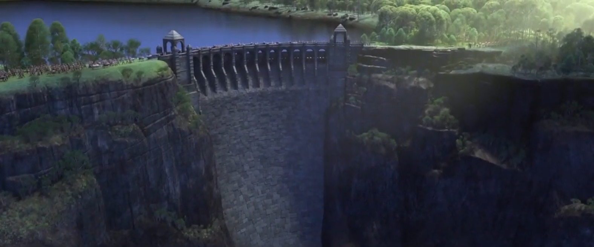

https://www.youtube.com/watch?v=61wIEF8s_Ow
Historia contada por el Rey Agnar:
Tan al norte como podemos ir, estaba un muy viejo y muy encantado
bosque, pero su magia no era la de los hechizos de los goblins y las hadas perdidas, estaba protegido por los espíritus más poderosos de todos los del aire, el fuego, el agua y la tierra, pero también era el hogar del misterioso pueblo Nortuldhra con un ultra mágicos no Elsa no eran mágicos solo aprovecharon los obsequios de los bosques sus caminos eran tan diferentes a los nuestros pero aun así nos prometieron amistad en honor a eso tu abuelo el rey arte de la luna les construyó un maldito poderoso para fortalecer sus aguas fue un regalo de paz y me sentí muy honrado de poder ir al bosque para celebrar su baile todo lo que sé, no estaba del todo preparado para lo que traería el día, bajamos la guardia, estábamos encantados, se sentía tan mágico, pero algo salió mal. nos estaban atacando por detrás fue una batalla brutal tu abuelo estaba perdido la lucha enfureció a los espíritus ellos volvieron su magia contra todos nosotros allí estaba esta voz y alguien me salvó incontables los espíritus luego desaparecieron y una poderosa niebla cubrió el bosque lo Sacando a todos y esa noche llegué a casa rey de Arendelle.
